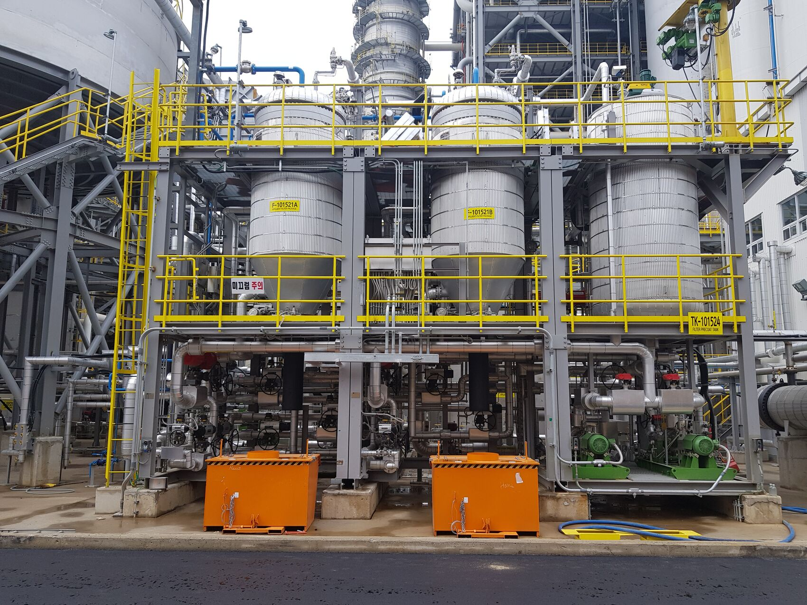

Our Speciality
Perrin ball valves are available with wide range of material, cast or forged carbon steel, stainless steel and duplex SS. Exotic materials like titanium, Monel, Inconel or hasteloy may be used based on severity of application or special requirements of pressure and temperature. Based on service requirements ball valves can be provided with soft seat or metal seats. Soft seats are available in PTFE, TFM 1600, PCTFE, R-PCTFE, PEEK and Nylon. Perrin has special proprietary hard coating procedures for its metal seated ball valves, which makes unique for critical service applications.
Perrin GmbH is a globally well know manufacturer and supplier of ball valves with various models specially designed for its unique applications. Designs of ball valves varies with various shapes and dimensions, this parameters largely depend on plant requirement, licensor recommendations and service applications.
Services Overview